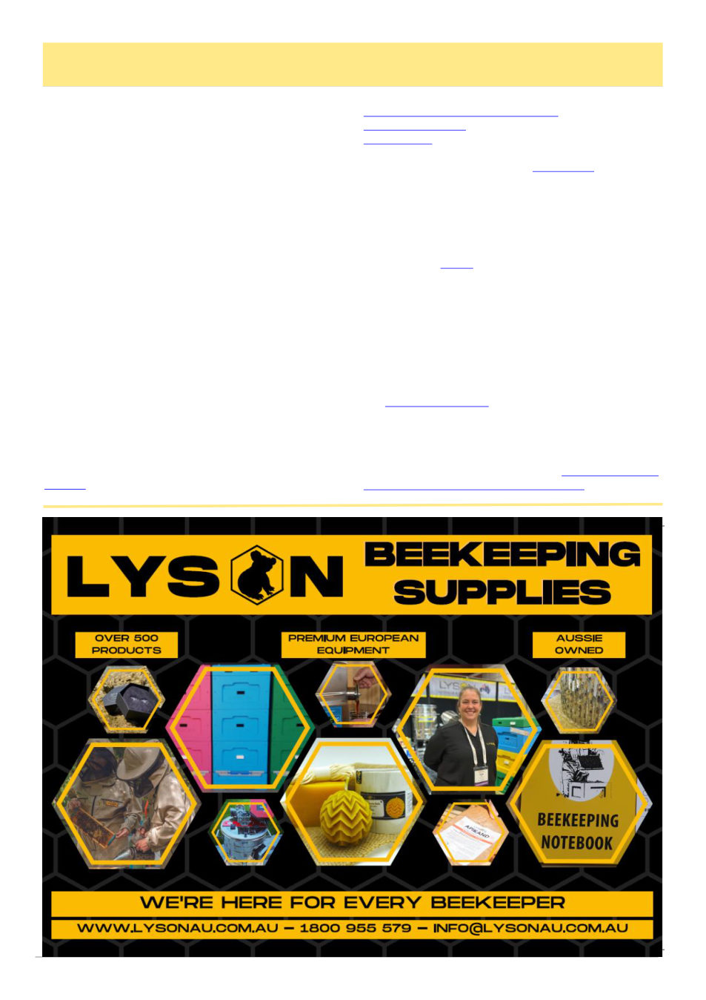

April 2026
19
AHBIC Update
Amitraz Resistant Varroa Confirmed in QLD
Amitraz resistance has been confirmed in Queens-
land. The same populations that previously tested posi-
tive for pyrethroid resistance have now also confirmed
to have amitraz resistance. There is little information at
this stage and departments in both QLD and NSW are
expected to communicate with industry next week, we
await further details.
This strengthens the case for this being a new popu-
lation of mites to the June 2022 incursion and further
testing will be important to understand the geographical
spread. Being a likely new population of mites means
beekeepers that do not have confirmed resistance should
continue to use all available miticide options to control
mites but ensure you ROTATE modes of action and
monitor for efficacy of treatments.
We acknowledge that this news, on top of existing
pressures on beekeepers, is a lot to cope with.
Taking Care of Yourself and your Mates
We acknowledge that ongoing challenges facing our
industry can be incredibly difficult to navigate. If you
are having a really hard day, feeling overwhelmed, un-
sure where to start, are experiencing anxiety, depression
or looking for ways to support a friend, we encourage
you to reach out to available resources for support.
Mental health, counselling and financial support are
available from many services: ·
Lifeline, 13 11 14 ·
Rural Aid (Mon to Fri 9am – 5pm), 1300 175 594 ·
Rural Financial Counselling Services ·
Beyond Blue, 1300 22 46 36
Did you know?
Beyond Blue have developed “NewAccess”, a tailored
mental health coaching program for small business
owners, available by phone or online from anywhere in
Australia. “NewAccess” is a free, confidential mental
health coaching program, designed to help small busi-
ness owners and sole traders manage stress, worry and
overwhelm.
Enquire today online or call: 03 9250 8305
Bee Pest Blitz is a national initiative throughout April
annually, it is a campaign to increase awareness of the
importance of bee biosecurity and encourage beekeep-
ers to inspect their hives for high priority exotic pests.
This national month-long call-to-action campaign en-
courages beekeepers to conduct surveillance during the
month of April. But beekeepers can and should check
their hives regularly. The Bee Pest Blitz web-
site beepestblitz.com.au is live and contains resources to
assist beekeepers to conduct alcohol washes on their
hives and report their findings. By participating in the
Bee Pest Blitz month, Australian beekeepers will fulfil
their bee biosecurity obligations and one of the three
inspection requirements under the Australian Honey
Bee Industry Biosecurity Code of Practice.